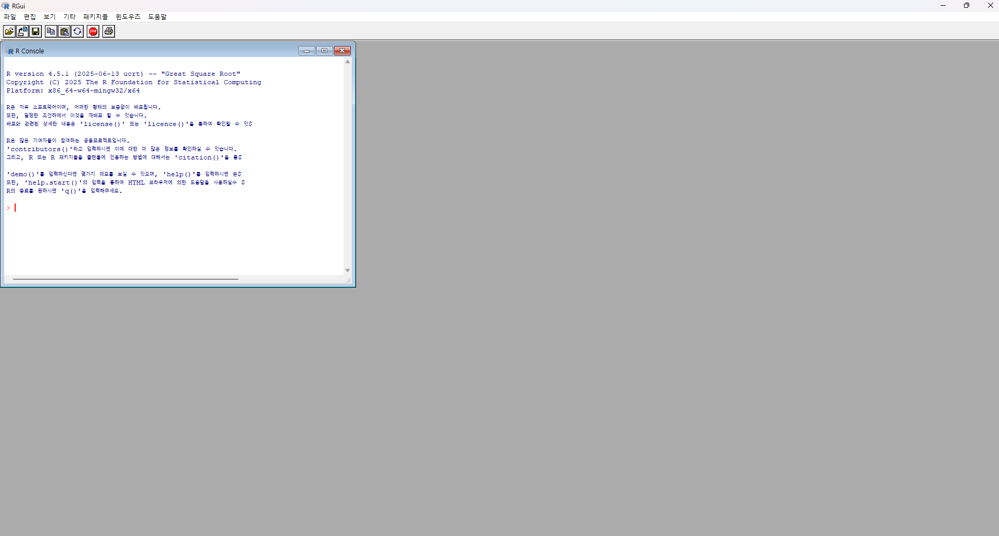

이번 단계의 학습 목표
1R이란 무엇인가?
R은 데이터를 처리하고 통계적으로 분석하며, 분석 결과를 그래프로 표현할 수 있는 프로그래밍 언어이자 분석 실행 환경입니다.
생명정보학에서는 유전자 발현 분석, 차등발현 유전자 분석, 생존분석, 기능분석 등 다양한 연구에 R이 사용됩니다. 이번 교육에서는 GEO에서 공개된 microarray 데이터를 R로 불러와 분석합니다.
이번 과정에서 R이 하는 일

① R ConsoleR 명령어를 입력하고 실행 결과와 오류 메시지를 확인하는 공간입니다.
> 기호R이 새로운 명령을 입력받을 준비가 되었다는 의미입니다.
2RStudio란 무엇인가?
RStudio는 R 코드를 편리하게 작성하고 실행할 수 있도록 도와주는 통합개발환경(IDE)입니다.
코드 편집기, 실행 결과, 분석 중 생성된 데이터, 그래프와 파일을 하나의 화면에서 관리할 수 있습니다. RStudio는 R을 대신하는 프로그램이 아니라 설치된 R을 더 편리하게 사용하도록 도와주는 프로그램입니다.
3R과 RStudio의 차이
| 구분 | R | RStudio |
|---|---|---|
| 역할 | 분석을 실제로 실행 | R을 편리하게 사용하는 작업환경 |
| 비유 | 자동차의 엔진 | 운전석과 계기판 |
| 주요 기능 | 계산, 통계분석, 그래프 생성 | 코드 작성, 실행, 파일과 결과 관리 |
| 설치 순서 | 먼저 설치 | R 설치 후 설치 |
4Windows에서 R 설치하기
R 공식 다운로드
CRAN(The Comprehensive R Archive Network)의 공식 Windows 다운로드 페이지를 이용합니다.
Windows용 R 다운로드 CRAN 홈페이지- 위의 Windows용 R 다운로드 버튼을 클릭합니다.
- 페이지 상단의 Download R-x.x.x for Windows 링크를 클릭합니다.
- 다운로드된
.exe설치 파일을 실행합니다. - 설치 언어를 선택하고 안내에 따라 진행합니다.
- 특별한 이유가 없다면 설치 위치와 구성 요소를 포함한 모든 항목을 기본값으로 유지합니다.
- 설치가 완료되면 Windows 시작 메뉴에서 R을 확인합니다.
5Windows에서 RStudio 설치하기
RStudio Desktop 공식 다운로드
RStudio는 Posit에서 개발합니다. 교육용으로 무료 RStudio Desktop을 설치합니다.
RStudio Desktop 다운로드 RStudio 소개- R 설치가 완료되었는지 먼저 확인합니다.
- 위의 RStudio Desktop 다운로드 버튼을 클릭합니다.
- Windows용 RStudio 설치 파일을 다운로드합니다.
- 다운로드된 설치 파일을 실행합니다.
- 설치 위치 등은 기본값을 유지하고 설치를 완료합니다.
- Windows 시작 메뉴에서 RStudio를 실행합니다.
6RStudio 화면 구성 이해하기
RStudio는 일반적으로 네 개의 영역으로 구성됩니다. 아래 화면은 RStudio에서 새 R Script를 연 직후의 모습입니다.
① Source
R 코드를 작성하고 .R 파일로 저장하는 공간입니다.
② Console
R 코드가 실제로 실행되고 결과와 오류 메시지가 출력되는 공간입니다.
③ Environment / History
현재 생성된 데이터와 객체, 이전에 실행한 명령을 확인합니다.
④ Files / Plots / Packages / Help
파일, 그래프, 설치 패키지와 도움말을 확인합니다.
7설치 확인하기
RStudio를 실행하고 Console에 다음 코드를 한 줄씩 입력합니다.
# 설치된 R 버전 확인
R.version.string
# 간단한 계산
1 + 1
# 문자 출력
print("R installation completed!")
# 현재 작업 폴더 확인
getwd()다음과 같은 결과가 표시되면 정상입니다.
[1] 2
[1] "R installation completed!"> 기호는 Console의 입력 표시이므로 직접 입력하지 않습니다.
8GEO 실습용 Project 만들기
분석 코드와 데이터를 일정하게 관리하기 위해 실습 전용 폴더와 RStudio Project를 만듭니다.
1) Windows에 영문 폴더 만들기
C:/Bioinformatics/GEO_microarray2) RStudio Project 생성
- RStudio 상단 메뉴에서 File → New Project를 선택합니다.
- Existing Directory를 선택합니다.
C:/Bioinformatics/GEO_microarray폴더를 지정합니다.- Create Project를 클릭합니다.
- RStudio 오른쪽 위에 Project 이름이 표시되는지 확인합니다.
3) 권장 하위 폴더
GEO_microarray/
├── data_raw/
├── data_processed/
├── results/
├── figures/
└── scripts/9자주 발생하는 문제
getwd()로 현재 작업 폴더를 확인합니다. 한글, 공백, OneDrive 동기화 경로를 피하고 RStudio Project를 사용합니다.